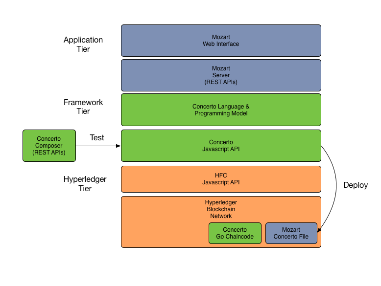

Overview
IBM Concerto is an application development framework for building blockchain applications based on Hyperledger.
The major components of Concerto are:
- The Concerto language for describing the structure of resources (assets, participants and transactions) that participate in a blockchain-mediated business network.
- Javascript APIs to query, create, update and delete resources and submit transactions from client applications. Concerto resources are stored on the blockchain.
- Javascript transaction processor functions that runs on Hyperledger when transactions are submitted for processing. These functions may update the state of resources stored on the blockchain via server-side Concerto APIs.
- The Composer utility and tools to interactively test Concerto-based solutions.

Concerto Language
The Concerto language is a strongly-typed object-oriented modeling language. It is used to describe the structure of resources as well as to write transaction processor functions that are invoked on the server when transactions are submitted.
A Concerto file is composed of the following elements:
- A single namespace. All resource declarations within the file are implicitly in this namespace.
- Optional import declarations that imported resources from other namespaces.
- A set of resource definitions (see below).
Declarations of enumerated types
```
/**
* The types of animals that could be moved
*/
enum AnimalType {
o SHEEP_GOAT
o CATTLE
o PIG
o DEER_OTHER
}
```
Declarations of Assets, Participants, Transactions
Assets, Participants and Transactions are class definitions. The concepts of Asset, Participant and Transaction may be considered to be different stereotypes of the class type.
A class in Concerto is referred to as a Resource Definition. Therefore an Asset (instance) has-a Asset Definition.
A resource definition has the following properties:
- A name
- A namespace defined by the namespace of its parent file
- An identifying field. For example, the Vehicle asset might be identified by the vin field. Identifying fields must be Strings.
- An optional super-type, which the resource definition extends.
- An optional 'abstract' declaration, to indicate that this type cannot be created
- A set of named fields (data owned by the resource, using a has-a relationship)
-
A set of relationships to other concerto types that are not owned by the resource but that may be referenced from the resource. Relationships are unidirectional.
/** * A Field asset. A Field is related to a list of animals */ asset Field identified by fieldId { o String fieldId o String name --> Animal[] animals }/** * A Farmer participant */ participant Farmer identified by farmerId { o String farmerId o String firstName o String lastName o String address1 o String address2 o String county o String postcode }/** * An abstract transaction type for animal movements */ abstract transaction AnimalMovement identified by transactionId { o String transactionId --> Animal animal --> Holding from --> Holding to }/** * A transaction type for an animal leaving a farm */ transaction AnimalMovementDeparture extends AnimalMovement { }
Primitive types
Concerto resources are defined in terms of the following primitive types:
- String : a UTF8 encoded String
- Double : a double precision 64 bit numeric value
- Integer : a 32 bit signed whole number
- Long : a 64 bit signed whole number
- DateTime : an ISO-8601 compatible time instance, with optional time zone and UTZ offset
- Boolean : a Boolean value, either true or false.
Arrays
All types in Concerto may be declared as arrays using the [] notation. Hence
`Integer[] integerArray`
Is an array of Integers stored in a field called 'integerArray'. While
`--> Animal[] incoming`
Is an array of relationships to the Animal type, stored in t a field called 'incoming'.
Relationships
A relationship in the Concerto language is a tuple composed of:
- The namespace of the type being referenced
- The type name of the type being referenced
- The identifier of the instance being referenced
Hence a relationship could be to: org.acme.Vehicle/123456
This would be a relationship to the Vehicle type declared in the org.acme namespace with the identifier 123456.
Relationships must be resolved to retrieve an instance of the object being referenced. The act of resolution may result in null, if the object no longer exists or the information in the relationship is invalid.
NOT YET IMPLEMENTED: relationship resolution.
Functions
A Concerto file may contain utility and transaction processing functions, written in the Javascript language. These functions are automatically invoked by the Concerto framework chaincode when transactions are submitted for processing.
Example:
```
/**
* A transaction processor for AnimalMovementDeparture
*/
function onAnimalMovementDeparture(movementDeparture) {
// mark the animal as IN_TRANSIT
movementDeparture.animal.resolve().movementStatus = 'IN_TRANSIT';
// tell the 'to' Holder the animal is incoming
movementDeparture.to.resolve().incoming.add(animalMovement.animal);
// remove the animal from the field
movementDeparture.animal.resolve().location.remove(animalMovement.animal);
// set the animal location to null
movementDeparture.animal.resolve().location = null;
}
```
The code above declares a function that processes AnimalMovementDeparture transactions. The function must be named using the convention "on" + the type of the transaction. The transaction type must be declared in the current concerto file, or must be an imported type.
Any functions whose names do not start with the 'on' prefix are utility functions that may be invoked from transaction processing functions.
STATUS: functions may be declared in a Concerto file but are not yet executed on the server. The API calls that are available to functions (and the implied) execution environment is still TBD.
Start contributing to the Concerto project
The following guide will walk you through getting started as a contributor to the Concerto project.
Installation
Releases of Concerto are currently pushed to a private npm registry, that is hosted by the IBM Whitewater team. You must authenticate to that private npm registry with your w3id before you can install the Concerto module:
$ npm login --registry=https://npm-registry.whitewater.ibm.com --scope=@ibm
Username: fredbloggs
Password: xxxxxxxx
Email: (this IS public) fredbloggs@xx.ibm.com
Logged in as fredbloggs to scope @ibm on https://npm-registry.whitewater.ibm.com/.
It will ask you for a name (w3id without the @xx.ibm.com), password (w3 password), and e-mail (w3id). After you have logged in, you must complete the two stage w3id authentication process. When you run an npm command, it will fail and give you a link to access in a browser:
$ npm install @ibm/ibm-concerto
npm ERR! Linux 4.4.0-36-generic
npm ERR! argv "/usr/bin/nodejs" "/usr/bin/npm" "install" "@ibm/ibm-concerto"
npm ERR! node v6.5.0
npm ERR! npm v3.10.3
npm ERR! code E401
npm ERR! visit https://github.ibm.com/login/oauth/authorize to validate your session : @ibm/ibm-concerto
Once you have clicked the link and completed the two stage w3id authentication process, you can re-run the npm command:
npm install @ibm/ibm-concerto --save
Usage
Please see the Mozart and Handel projects for typical usage. Mozart uses Concerto from an Express-based Node.js application while Handel uses it from a command line Node.js application.
Tests
npm test
Contributing
To read more about the community and guidelines for submitting pull requests, please read the Contributing document.
Release History
- 0.0.1 Initial release